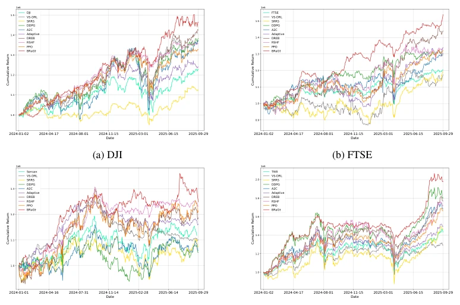
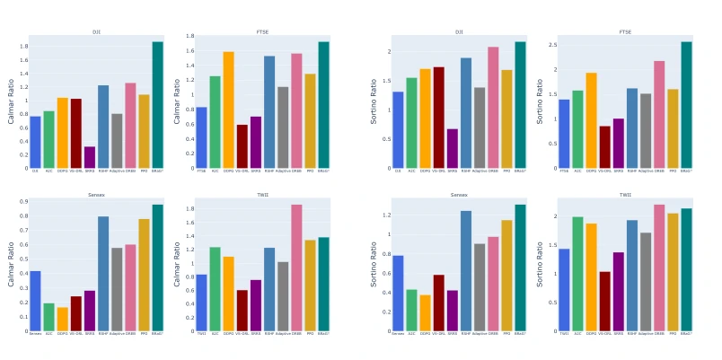
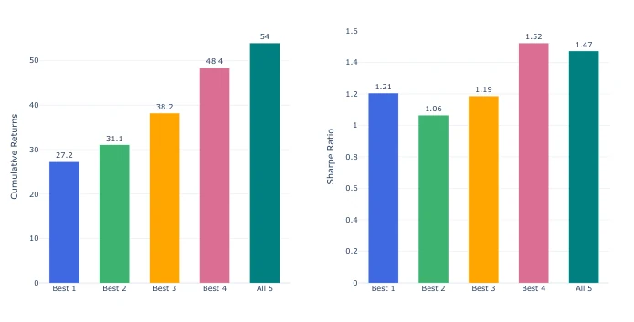
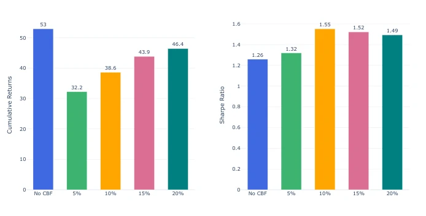

This paper treats stock trading as a playground for reinforcement learning, attempting to use mathematical magic to solve the longstanding problem of "high market noise and sparse rewards." The BRaG framework is quite interesting; it does not rely blindly on a single expert but uses the Wasserstein barycenter to aggregate multiple strategies (momentum, mean reversion, etc.) into a "pseudo-expert," then uses GAIL pre-training to stabilize exploration, and finally fine-tunes with PPO. The most clever addition is incorporating Control Barrier Functions (CBF) to control drawdowns, akin to fastening a safety belt for traders. However, since this is financial data rather than robotic manipulation, generalization to real markets still depends on luck. Although the results outperform the baselines on four indices, the expert strategies themselves are rule-based; if market styles shift, these experts may also become ineffective, rendering the model like "seeking a sword in a boat." Overall, the methodology is solid, but black swans in financial markets cannot be completely constrained by mathematical formulas.
研究动机Motivation
在金融领域用强化学习（RL）一直是个坑，因为市场反馈延迟且充满噪声，导致奖励设计困难（Wu et al., 2020）。现有的深度强化学习（DRL）方法往往依赖人工设计的奖励函数，难以捕捉复杂的交易偏好（Choudhary et al., 2025）。逆强化学习（IRL）虽然能恢复潜在奖励，但大多依赖单一专家演示，容易过拟合且缺乏多样性（Sun et al., 2023）。此外，风险约束常被忽略或难以在训练时显式保证（Orra et al., 2025）。本文旨在解决多专家异构策略的聚合问题，避免单一策略偏差，同时通过对抗模仿学习稳定探索，并引入显式风险约束，填补了统一框架的空白。
Applying reinforcement learning (RL) in the financial domain has always been a challenging pitfall, as market feedback is delayed and noisy, making reward design difficult (Wu et al., 2020). Existing deep reinforcement learning (DRL) methods often rely on manually designed reward functions, struggling to capture complex trading preferences (Choudhary et al., 2025). Although inverse reinforcement learning (IRL) can recover latent rewards, it mostly relies on single expert demonstrations, making it prone to overfitting and lacking diversity (Sun et al., 2023). Furthermore, risk constraints are often overlooked or difficult to explicitly guarantee during training (Orra et al., 2025). This paper aims to address the aggregation problem of multi-expert heterogeneous strategies to avoid single-strategy bias, while stabilizing exploration through adversarial imitation learning and introducing explicit risk constraints, thereby filling the gap in a unified framework.
The BRaG framework proceeds in three steps. First, it utilizes performance-weighted sliced Wasserstein barycenters to aggregate multiple heterogeneous expert trajectories (e.g., momentum, moving average strategies), generating a stable pseudo-expert distribution to reduce single-expert bias. Second, it employs GAIL for adversarial imitation learning pre-training, using implicit rewards generated by the discriminator to align with the expert distribution, addressing the instability of initial RL exploration. Finally, it uses PPO combined with real market rewards for fine-tuning. The key innovation lies in introducing Control Barrier Functions (CBF), which enforce constraints on maximum drawdown during the action execution phase and incorporate soft penalties into the training objective to ensure risk compliance. The entire process achieves a closed loop from expert knowledge distillation to risk-aware RL, leveraging prior knowledge while retaining adaptive capabilities.
实验Experiments
实验覆盖了美、英、印、台四个主要股市指数，数据跨度 2010-2025。基线包括传统规则（如均值方差优化）、经典 DRL（A2C, PPO）及近期 SOTA 方法（VS-DRL, SRRS）。评估指标涵盖累计收益、夏普比率、最大回撤等。结果显示 BRaG 在所有市场均取得最高收益和夏普比率，且回撤控制优于基线。消融实验表明，增加专家数量能提升性能，CBF 参数设置直接影响风险表现。尽管在测试集上表现稳健，但依赖历史专家策略的局限性依然存在，未来需考虑更动态的专家源。
Experiments cover four major stock market indices from the US, UK, India, and Taiwan, with data spanning 2010-2025. Baselines include traditional rules (e.g., mean-variance optimization), classic DRL (A2C, PPO), and recent SOTA methods (VS-DRL, SRRS). Evaluation metrics encompass cumulative returns, Sharpe ratio, maximum drawdown, etc. Results indicate that BRaG achieves the highest returns and Sharpe ratios across all markets, with drawdown control outperforming the baselines. Ablation studies show that increasing the number of experts improves performance, and CBF parameter settings directly impact risk performance. Although the model demonstrates robustness on the test set, the limitation of relying on historical expert strategies persists, requiring consideration of more dynamic expert sources in the future.

Figure 1: Cumulative return trajectories of the proposed BRaG model and baseline strategies across the DJI, FTSE, Sensex, and TWII datasets during the out-of-sample trading period.

Figure 2: Distribution of Calmar and Sortino ratios across all models and datasets, illustrating comparative downside risk and risk-adjusted performance.

Figure 3: Effect of varying the number of expert trajectories used for barycenter construction on cumulative return and Sharpe ratio. Experts are added incrementally based on validation performance.

Figure 4: Effect of varying the maximum drawdown limit in the control barrier function on cumulative return and Sharpe ratio.